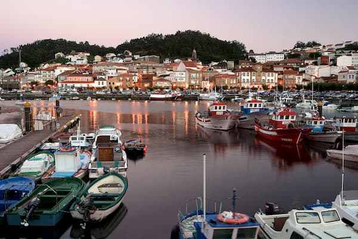
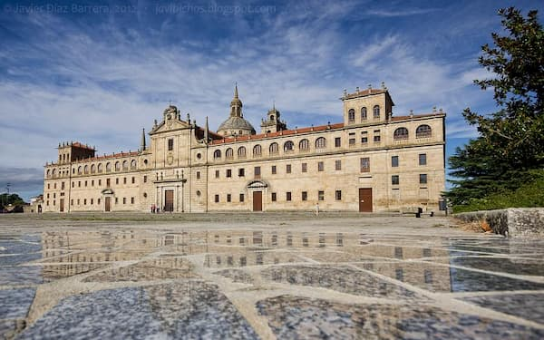
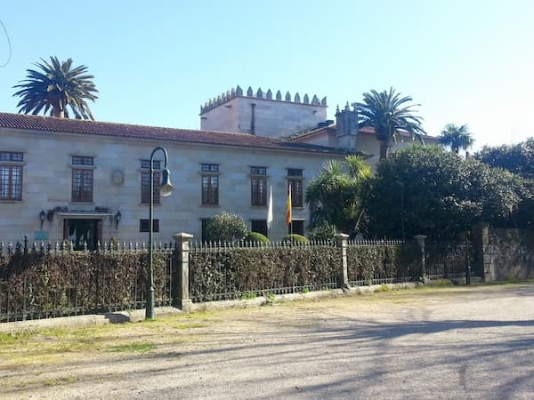

La pandemia de COVID-19 es una pandemia derivada de la enfermedad por coronavirus 2019 (COVID-19), ocasionada por el virus SARS-CoV-2 (coronavirus del síndrome respiratorio agudo grave tipo 2) Se identificó por primera vez en diciembre de 2019 en la ciudad de Wuhan capital de la provincia de Hubei , en la República Popular China, al reportarse casos de un grupo de personas enfermas con un tipo de neumonía desconocida.
La Madre Teresa de Calcuta nació el 26 de agosto de 1910 en Uskup , la actual Skopje . Murió el 5 de septiembre de 1997 en Calcuta (India).
Teresa de Calcuta fue la líder y fundadora de las MC y Premio Nobel de la Paz en 1979. En 2016, fue declarada Santa por el Papa Francisco.
"Agnes Gonxha Bojaxhiu fue el nombre de nacimiento de Teresa de Calcuta . Era la hija menor de un matrimonio acomodado albanés. Su padre, dedicado a asuntos políticos en Albania, murió de manera misteriosa en 1919. Desde entonces, su madre fue la encargada de su educación en la fe católica."
Yo sé un himno gigante y extraño
que anuncia en la noche del alma una aurora,
y estas páginas son de este himno
cadencias que el aire dilata en la sombras.
→ Muros (A Coruña)
Una de las características principales es su apertura al mar. Señorial y con la piedra como protagonista de las casas, en las calles, estrechas y serpenteantes encontrarás construcciones con siglos de historia que te rememorarán al pasado. ¿Preparamos un viaje a Muros?

→ Monforte de Lemos (Lugo)
La grandeza de este pueblo lo ha convertido en uno de los más bonitos de Galicia. Su monasterio, el castillo, el convento o el palacio condal hacen que su majestuosidad vaya incrementándose por momentos. A nadie deja indiferente Monforte de Lemos, un municipio de 19.000 habitantes 
→ Cambados (Pontevedra)
Con una población de casi 14.000 habitantes, Cambados se encuentra en la comarca del Salnés y probablemente habrás oído hablar de él por sus afamados vinos. Además reúne numerosos monumentos como el Pazo de Bazán, patrimonio histórico del municipio donde vivió la brillante escritora Emilia Pardo Bazán.
